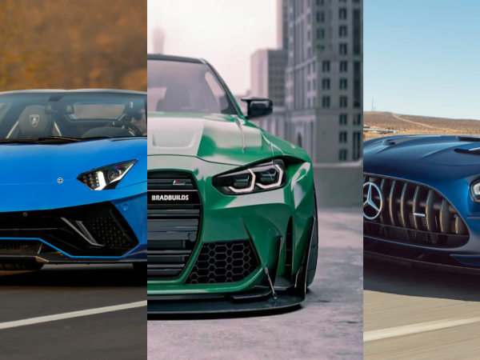

My Favorite Vaction Spot | Where I was born |
My Favorite Show | My Favorite Movie Series |
My Current Location |
My Favorite Video Game | Current Fashion Trends | Citation Page |
The Mercedes-Benz AMG GT is a stunning grand touring vehicle. This model was introduced in early September 2014 and has continued to evolve until the present(2022). The AMG GT was the second sports car developed by Mercedes-Benz AMG. The AMG GT is powered by a V8 engine with turbochargers that you can see in the center of the vehicle. In 2015 of March Mercedes-Benz AMG brought the vehicle to the Geneva Motor show. However, this was not the normal version of the GT is was a race version of the GT called the AMG GT3 which is powered by a naturally aspirated V8 engine that helped the car speed from 0-100km/hr within 2.84 seconds! The GT3 is completely surrounded in carbon fiber which reduced the weight of the vehicle to under 1300kg.
Watch a video on the AMG GT's 0-300km/hr speed!These are some of my other favorite Mercedes vehicles:
| SUVs | Sedans | Coupes |
|---|---|---|
| Maybach GLS SUV | C300 Sedan | AMG CLA 45 Coupe |
| G63 SUV | AMG E53 Sedan | AMG CLS 53 Coupe |
| AMG GLE 53 Coupe | EQS 580 Sedan | AMG S 63 Coupe |
| Mismarked Yorkies | S580 LWB Sedan | AMG C 43 Coupe |
Click on a section of the image to watch a point of view drive of the car!
